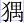

話說孫大聖牽著馬，挑著擔，滿山頭尋叫師父，忽見豬八戒氣呼呼的跑將來道：「哥哥，你喊怎的？」行者道：「師父不見了，你可曾看見？」八戒道：「我原來只跟唐僧做和尚的，你又捉弄我，教做甚麼將軍！我捨著命，與那妖精戰了一會，得命回來。師父是你與沙僧看著的，反來問我？」行者道：「兄弟，我不怪你。你不知怎麼眼花了，把妖精放回來拿師父。我去打那妖精，教沙和尚看著師父的，如今連沙和尚也不見了。」八戒笑道：「想是沙和尚帶師父哪裏出恭去了。」
說不了，只見沙僧來到。行者問道：「沙僧，師父哪裏去了？」沙僧道：「你兩個眼都昏了，把妖精放將來拿師父，老沙去打那妖精的，師父自家在馬上坐來。」行者氣得暴跳道：「中他計了！中他計了！」沙僧道：「中他甚麼計？」行者道：「這是分瓣梅花計，把我弟兄們調開，他劈心裏撈了師父去了。天天天！卻怎麼好！」止不住腮邊淚滴。八戒道：「不要哭！一哭就膿包了！橫豎不遠，只在這座山上，我們尋去來。」三人沒計奈何，只得入山找尋，行了有二十里遠近，只見那懸崖之下，有一座洞府：
削峰掩映，怪石嵯峨。奇花瑤草馨香，紅杏碧桃艷麗。崖前古樹，霜皮溜雨四十圍；門外蒼松，黛色參天二千尺。雙雙野鶴，常來洞口舞清風；對對山禽，每向枝頭啼白晝。簇簇黃籐如掛索，行行煙柳似垂金。方塘積水，深穴依山。方塘積水，隱窮鱗未變的蛟龍；深穴依山，住多年吃人的老怪。果然不亞神仙境，真是藏風聚氣巢。
行者見了，兩三步跳到門前看處，那石門緊閉，門上橫安著一塊石版，石板上有八個大字，乃隱霧山折岳連環洞。行者道：「八戒，動手啊！此間乃妖精住處，師父必在他家也。」那呆子仗勢行兇，舉釘鈀盡力築將去，把他那石頭門築了一個大窟窿，叫道：「妖怪！快送出我師父來，免得釘鈀築倒門，一家子都是了帳！」守門的小妖急急跑入報道：「大王，闖出禍來了！」老怪道：「有甚禍？」小妖道：「門前有人把門打破，嚷道要師父哩！」老怪大驚道：「不知是哪個尋將來也？」先鋒道：「莫怕！等我出去看看。」那小妖奔至前門，從那打破的窟窿處，歪著頭往外張，見是個長嘴大耳朵，即回頭高叫：「大王莫怕他！這個是豬八戒，沒甚本事，不敢無禮。他若無禮，開了門，拿他進來湊蒸。怕便只怕那毛臉雷公嘴的和尚。」八戒在外邊聽見道：「哥啊，他不怕我，只怕你哩。師父定在他家了，你快上前。」行者罵道：「潑孽畜！你孫外公在這裏！送我師父出來，饒你命罷！」先鋒道：「大王，不好了！孫行者也尋將來了！」老怪抱怨道：「都是你定的甚麼分瓣分瓣，卻惹得禍事臨門！怎生結果？」先鋒道：「大王放心，且休埋怨。我記得孫行者是個寬洪海量的猴頭，雖則他神通廣大，卻好奉承。我們拿個假人頭出去哄他一哄，奉承他幾句，只說他師父是我們吃了。若還哄得他去了，唐僧還是我們受用；哄不過再作理會。」老怪道：「哪裏得個假人頭？」先鋒道：「等我做一個兒看。」
好妖怪，將一把切鋼刀斧，把柳樹根砍做個人頭模樣，噴上些人血，糊糊塗塗的，著一個小怪，使漆盤兒拿至門下叫道：「大聖爺爺，息怒容稟。」孫行者果好奉承，聽見叫聲大聖爺爺，便就止住八戒：「且莫動手，看他有甚話說。」拿盤的小怪道：「你師父被我大王拿進洞來，洞裏小妖村頑，不識好歹，這個來吞，那個來啃，抓的抓，咬的咬，把你師父吃了，只剩了一個頭在這裏也。」行者道：「既吃了便罷，只拿出人頭來，我看是真是假。」那小怪從門窟裏拋出那個頭來，豬八戒見了就哭道：「可憐啊！那們個師父進去，弄做這們個師父出來也！」行者道：「呆子，你且認認是真是假，就哭！」八戒道：「不羞，人頭有個真假的？」行者道：「這是個假人頭。」八戒道：「怎認得是假？」行者道：「真人頭拋出來，撲搭不響，假人頭拋得像梆子聲。你不信，等我拋了你聽。」拿起來往石頭上一摜，噹的一聲響亮。沙和尚道：「哥哥，響哩！」行者道：「響便是個假的，我教他現出本相來你看。」急掣金箍棒，撲的一下，打破了。八戒看時，乃是個柳樹根。呆子忍不住罵起來道：「我把你這伙毛團！你將我師父藏在洞裏，拿個柳樹根哄你豬祖宗，莫成我師父是柳樹精變的！」
慌得那拿盤的小怪，戰兢兢跑去報道：「難難難！難難難！」老妖道：「怎麼有許多難？」小妖道：「豬八戒與沙和尚倒哄過了，孫行者卻是個販古董的——識貨！識貨！他就認得是個假人頭。如今得個真人頭與他，或者他就去了。」老怪道：「怎麼得個真人頭？我們那剝皮亭內有吃不了的人頭選一個來。」眾妖即至亭內揀了個新鮮的頭，教啃淨頭皮，滑塔塔的，還使盤兒拿出，叫：「大聖爺爺，先前委是個假頭。這個真正是唐老爺的頭，我大王留了鎮宅子的，今特獻出來也。」撲通的把個人頭又從門窟裏拋出，血滴滴的亂滾。孫行者認得是個真人頭，沒奈何就哭，八戒、沙僧也一齊放聲大哭。八戒噙著淚道：「哥哥，且莫哭，天氣不是好天氣，恐一時弄臭了。等我拿將去，乘生氣埋下再哭。」行者道：「也說的是。」那呆子不嫌穢污，把個頭抱在懷裏，跑上山崖。向陽處，尋了個藏風聚氣的所在，取釘鈀築了一個坑，把頭埋了，又築起一個墳塚，才叫沙僧：「你與哥哥哭著，等我去尋些甚麼供養供養。」他就走向澗邊，攀幾根大柳枝，拾幾塊鵝卵石，回至墳前，把柳枝兒插在左右，鵝卵石堆在面前。行者問道：「這是怎麼說？」八戒道：「這柳枝權為松柏，與師父遮遮墳頂；這石子權當點心，與師父供養供養。」行者喝道：「夯貨！人已死了，還將石子兒供他！」八戒道：「表表生人意，權為孝道心。」行者道：「且休胡弄！教沙僧在此：一則廬墓，二則看守行李馬匹。我和你去打破他的洞府，拿住妖魔，碎屍萬段，與師父報仇去來。」沙和尚滴淚道：「大哥言之極當。你兩個著意，我在此處看守。」
好八戒，即脫了皂錦直裰，束一束著體小衣，舉鈀隨著行者。二人努力向前，不容分辨，逕自把他石門打破，喊聲振天叫道：「還我活唐僧來耶！」那洞裏大小群妖，一個個魂飛魄散，都抱怨先鋒的不是。老妖問先鋒道：「這些和尚打進門來，卻怎處治？」先鋒道：「古人說得好，手插魚籃，避不得腥。一不做，二不休，左右率領家兵殺那和尚去來！」老怪聞言，無計可奈，真個傳令，叫：「小的們，各要齊心，將精銳器械跟我去出征。」果然一齊吶喊，殺出洞門。這大聖與八戒，急退幾步，到那山場平處，抵住群妖，喝道：「哪個是出名的頭兒？哪個是拿我師父的妖怪？」那群妖紮下營盤，將一面錦繡花旗閃一閃，老怪持鐵杵，應聲高呼道：「那潑和尚，你認不得我？我乃南山大王，數百年放蕩於此。你唐僧已是我拿吃了，你敢如何？」行者罵道：「這個大膽的毛團！你能有多少的年紀，敢稱南山二字？李老君乃開天闢地之祖，尚坐於太清之右；佛如來是治世之尊，還坐於大鵬之下；孔聖人是儒教之尊，亦僅呼為夫子。你這個孽畜，敢稱甚麼南山大王，數百年之放蕩！不要走！吃你外公老爺一棒！」那妖精側身閃過，使杵抵住鐵棒，睜圓眼問道：「你這嘴臉像個猴兒模樣，敢將許多言語壓我！你有甚麼手段，在吾門下猖狂？」行者笑道：「我把你個無名的孽畜！是也不知老孫！你站住，硬著膽，且聽我說：
祖居東勝大神洲，天地包含幾萬秋。花果山頭仙石卵，卵開產化我根苗。
生來不比凡胎類，聖體原從日月儔。本性自修非小可，天姿穎悟大丹頭。
官封大聖居雲府，倚勢行兇鬥斗牛。十萬神兵難近我，滿天星宿易為收。
名揚宇宙方方曉；智貫乾坤處處留。今幸皈依從釋教，扶持長老向西遊。
逢山開路無人阻，遇水支橋有怪愁。林內施威擒虎豹，崖前復手捉貔貅。
東方果正來西域，哪個妖邪敢出頭！孽畜傷師真可恨，管教時下命將休！」
那怪聞言，又驚又恨。咬著牙，跳近前來，使鐵杵望行者就打。行者輕輕的用棒架住，還要與他講話，那八戒忍不住，掣鈀亂築那怪的先鋒。先鋒率眾齊來。這一場在山中平地處混戰，真是好殺：東土大邦上國僧，西方極樂取真經。南山大豹噴風霧，路阻深山獨顯能。施巧計，弄乖伶，無知誤捉大唐僧。相逢行者神通廣，更遭八戒有聲名。群妖混戰山平處，塵土紛飛天不清。那陣上小妖呼哮，槍刀亂舉；這壁廂神僧叱喝，鈀棒齊興。大聖英雄無敵手，悟能精壯喜神生。南

老怪，部下先鋒，都為唐僧一塊肉，致令捨死又亡生。這兩個因師性命成仇隙，那兩個為要唐僧忒惡情。往來鬥經多半會，衝衝撞撞沒輸贏。孫大聖見那些小妖勇猛，連打不退。即使個分身法，把毫毛拔下一把，嚼在口中，噴出去，叫聲「變！」都變做本身模樣，一個使一條金箍棒，從前邊往裏打進。那一二百個小妖，顧前不能顧後，遮左不能遮右，一個個各自逃生，敗走歸洞。這行者與八戒，從陣裏往外殺來。可憐那些不識俊的妖精，搪著鈀，九孔血出；挽著棒，骨肉如泥！唬得那南山大王滾風生霧，得命逃回。那先鋒不能變化，早被行者一棒打倒，現出本相，乃是個鐵背蒼狼怪。八戒上前扯著腳，翻過來看了道：「這廝從小兒也不知偷了人家多少豬牙子、羊羔兒吃了！」行者將身一抖，收上毫毛道：「呆子！不可遲慢！快趕老怪，討師父的命去來！」八戒回頭，就不見那些小行者，道：「哥哥的法相兒都去了！」行者道：「我已收來也。」八戒道：「妙啊！妙啊！」兩個喜喜歡歡，得勝而回。
卻說那老怪逃了命回洞，吩咐小妖搬石塊挑土，把前門堵了。那些得命的小妖，一個個戰兢兢的，把門都堵了，再不敢出頭。這行者引八戒，趕至門首吆喝，內無人答應。八戒使鈀築時，莫想得動。行者知之，道：「八戒，莫費氣力，他把門已堵了。」八戒道：「堵了門，師仇怎報？」行者道：「且回，上墓前看看沙僧去。」二人復至本處，見沙僧還哭哩。八戒越發傷悲，丟了鈀，伏在墳上，手撲著土哭道：「苦命的師父啊！遠鄉的師父啊！哪裏再得見你耶！」行者道：「兄弟，且莫悲切。這妖精把前門堵了，一定有個後門出入。你兩個只在此間，等我再去尋看。」八戒滴淚道：「哥啊！仔細著！莫連你也撈去了，我們不好哭得：哭一聲師父，哭一聲師兄，就要哭得亂了。」行者道：「沒事！我自有手段！」
好大聖，收了棒，束束裙，拽開步，轉過山坡，忽聽得潺潺水響，且回頭看處，原來是澗中水響，上溜頭沖洩下來。又見澗那邊有座門兒，門左邊有一個出水的暗溝，溝中流出紅水來。他道：「不消講！那就是後門了。若要是原嘴臉，恐有小妖開門看見認得，等我變作個水蛇兒過去。且住！變水蛇恐師父的陰靈兒知道，怪我出家人變蛇纏長，變作個小螃蟹兒過去罷。也不好，恐師父怪我出家人腳多。」即做一個水老鼠，颼的一聲攛過去，從那出水的溝中，鑽至裏面天井中。探著頭兒觀看，只見那向陽處有幾個小妖，拿些人肉巴子，一塊塊的理著曬哩。行者道：「我的兒啊！那想是師父的肉，吃不了，曬乾巴子防天陰的。我要現本相，趕上前，一棍子打殺，顯得我有勇無謀，且再變化進去，尋那老怪，看是何如。」跳出溝，搖身又一變，變做個有翅的螞蟻兒。真個是：
力微身小號玄駒，日久藏修有翅飛。閒渡橋邊排陣勢，喜來床下鬥仙機。
善知雨至常封穴，壘積塵多遂作灰。巧巧輕輕能爽利，幾番不覺過柴扉。
他展開翅，無聲無影，一直飛入中堂，只見那老怪煩煩惱惱正坐，有一個小妖從後面跳將來報道：「大王萬千之喜！」老妖道：「喜從何來？」小妖道：「我才在後門外澗頭上探看，忽聽得有人大哭。即睮上峰頭望望，原來是豬八戒、孫行者、沙和尚在那裏拜墳痛哭。想是把那個人頭認做唐僧的頭葬下，扛作墳墓哭哩。」行者在暗中聽說，心內歡喜道：「若出此言，我師父還藏在那裏，未曾吃哩。等我再去尋尋，看死活如何，再與他說話。」
好大聖，飛在中堂，東張西看，見旁邊有個小門兒，關得甚緊，即從門縫兒裏鑽去看時，原是個大園子，隱隱的聽得悲聲。逕飛入深處，但見一叢大樹，樹底下綁著兩個人，一人正是唐僧。行者見了，心癢難撓，忍不住現了本相，近前叫聲「師父。」那長老認得，滴淚道：「悟空，你來了？快救我一救！悟空！悟空！」行者道：「師父莫只管叫名字，面前有人，怕走了風訊。你既有命，我可救得你。那怪只說已將你吃了，拿個假人頭哄我，我們與他恨苦相持。師父放心，且再熬熬兒，等我把那妖精弄倒，方好來解救。」
大聖唸聲咒語，卻又搖身還變做個螞蟻兒，復入中堂，釘在正樑之上。只見那些未傷命的小妖，簇簇攢攢，紛紛嚷嚷。內中忽跳出一個小妖告道：「大王，他們見堵了門，攻打不開，死心塌地，捨了唐僧，將假人頭弄做個墳墓。今日哭一日，明日再哭一日，後日復了三，好道回去。打聽得他們散了啊，把唐僧拿出來，碎劖碎剁，把些大料煎了，香噴噴的大家吃一塊兒，也得個延年長壽。」又一個小妖拍著手道：「莫說莫說！還是蒸了吃的有味！」又一個說：「煮了吃，還省柴。」又一個道：「他本是個稀奇之物，還著些鹽兒醃醃，吃得長久。」行者在那樑中聽見，心中大怒道：「我師父與你有甚毒情，這般算計吃他！」即將毫毛拔了一把，口中嚼碎，輕輕吹出，暗唸咒語，都教變做瞌睡蟲兒，往那眾妖臉上拋去。一個個鑽入鼻中，小妖漸漸打盹，不一時，都睡倒了。只有那個老妖睡不穩，他兩隻手揉頭搓臉，不住的打涕噴，捏鼻子。行者道：「莫是他曉得了？與他個雙掭燈！」又拔一根毫毛，依母兒做了，拋在他臉上，鑽於鼻孔內。兩個蟲兒，一個從左進，一個從右入。那老妖睮起來，伸伸腰，打兩個呵欠，呼呼的也睡倒了。
行者暗喜，才跳下來，現出本相。耳朵裏取出棒來，幌一幌，有鴨蛋粗細，噹的一聲，把旁門打破，跑至後園，高叫：「師父！」長老道：「徒弟，快來解解繩兒，綁壞我了！」行者道：「師父不要忙，等我打殺妖精，再來解你。」急抽身跑至中堂。正舉棍要打，又滯住手道：「不好！等解了師父來打。」復至園中，又思量道：「等打了來救。」如此者兩三番，卻才跳跳舞舞的到園裏。長老見了，悲中作喜道：「猴兒，想是看見我不曾傷命，所以歡喜得沒是處，故這等作跳舞也？」行者才至前，將繩解了，挽著師父就走，又聽得對面樹上綁的人叫道：「老爺捨大慈悲，也救我一命！」長老立定身，叫：「悟空，那個人也解他一解。」行者道：「他是甚麼人？」長老道：「他比我先拿進一日。他是個樵子，說有母親年老，甚是思想，倒是個盡孝的，一發連他都救了罷。」行者依言，也解了繩索，一同帶出後門，睮上石崖，過了陡澗。長老謝道：「賢徒，虧你救了他與我命！悟能、悟淨都在何處？」行者道：「他兩個都在那裏哭你哩，你可叫他一聲。」
長老果厲聲高叫道：「八戒！八戒！」那呆子哭得昏頭昏腦的，揩揩鼻涕眼淚道：「沙和尚，師父回家來顯魂哩！在那裏叫我們不是？」行者上前喝了一聲道：「夯貨！顯甚麼魂？這不是師父來了？」那沙僧抬頭見了，忙忙跪在面前道：「師父，你受了多少苦啊！哥哥怎生救得你來也？」行者把上項事說了一遍。八戒聞言，咬牙恨齒，忍不住舉起鈀，把那墳塚一頓築倒，掘出那人頭，一頓築得稀爛。唐僧道：「你築他為何？」八戒道：「師父啊，不知他是哪家的亡人，教我朝著他哭！」長老道：「虧他救了我命哩。你兄弟們打上他門，嚷著要我，想是拿他來搪塞，不然啊，就殺了我也。還把他埋一埋，見我們出家人之意。」那呆子聽長老此言，遂將一包稀爛骨肉埋下，也劖起個墳墓。
行者卻笑道：「師父，你請略坐坐，等我剿除去來。」即又跳下石崖，過澗入洞，把那綁唐僧與樵子的繩索拿入中堂，那老妖還睡著了，即將他四馬攢蹄捆倒，使金箍棒掬起來，握在肩上，逕出後門。豬八戒遠遠的望見道：「哥哥好幹這握頭事！再尋一個兒趁頭挑著不好？」行者到跟前放下，八戒舉鈀就築。行者道：「且住！洞裏還有小妖怪，未拿哩。」八戒道：「哥啊，有便帶我進去打他。」行者道：「打又費工夫了，不若尋些柴，教他斷根罷。」那樵子聞言，即引八戒去東凹裏尋了些破梢竹、敗葉松、空心柳、斷根籐、黃蒿、老荻、蘆葦、乾桑，挑了若干，送入後門裏。行者點上火，八戒兩耳扇起風。那大聖將身跳上，抖一抖，收了瞌睡蟲的毫毛。那些小妖及醒來，煙火齊著，可憐！莫想有半個得命。連洞府燒得精空，卻回見師父。
師父聽見老妖方醒聲喚，便叫：「徒弟，妖精醒了。」八戒上前一鈀，把老怪築死，現出本相，原來是個艾葉花皮豹子精。行者道：「花皮會吃老虎，如今又會變人，這頓打死，才絕了後患也！」長老謝之不盡，攀鞍上馬。那樵子道：「老爺，向西南去不遠，就是舍下。請老爺到舍，見見家母，叩謝老爺活命之恩，送老爺上路。」長老欣然，遂不騎馬，與樵子並四眾同行，向西南迤逶前來，不多路，果見那：
石徑重漫苔蘚，柴門篷絡籐花。四面山光連接，一林鳥雀喧嘩。
密密松篁交翠，紛紛異卉奇葩。地僻雲深之處，竹籬茅舍人家。
遠見一個老嫗，倚著柴扉，眼淚汪汪的，兒天兒地的痛哭。這樵子看見是他母親，丟了長老，急忙忙先跑到柴扉前，跪下叫道：「母親！兒來也！」老嫗一把抱住道：「兒啊！你這幾日不來家，我只說是山主拿你去，害了性命，是我心疼難忍。你既不曾被害，何以今日才來？你繩擔、柯斧俱在何處？」樵子叩頭道：「母親，兒已被山主拿去，綁在樹上，實是難得性命，幸虧這幾位老爺！這老爺是東土唐朝往西天取經的羅漢。那老爺倒也被山主拿去綁在樹上，他那三位徒弟老爺，神通廣大，把山主一頓打死，卻是個艾葉花皮豹子精；概眾小妖俱盡燒死，卻將那老爺解下救出，連孩兒都解救出來，此誠天高地厚之恩！不是他們，孩兒也死無疑了。如今山上太平，孩兒徹夜行走，也無事矣。」那老嫗聽言，一步一拜，拜接長老四眾，都入柴扉茅舍中坐下。娘兒兩個磕頭稱謝不盡，慌慌忙忙的安排些素齋酬謝。八戒道：「樵哥，我見你府上也寒薄，只可將就一飯，切莫費心大擺布。」樵子道：「不瞞老爺說，我這山間實是寒薄，沒甚麼香蕈、蘑菰、川椒、大料，只是幾品野菜奉獻老爺，權表寸心。」八戒笑道：「聒噪聒噪，放快些兒就是，我們肚中饑了。」樵子道：「就有！就有！」果然不多時，展抹桌凳，擺將上來，果是幾盤野菜。但見那：
嫩焯黃花菜，酸虀白鼓丁。浮薔馬齒莧，江薺雁腸英。燕子不來香且嫩，芽兒拳小脆還青。爛煮馬藍頭，白熝狗腳跡。貓耳朵，野落蓽，灰條熟爛能中吃；剪刀股，牛塘利，倒灌窩螺操帚薺。碎米薺，萵菜薺，幾品青香又滑膩。油炒烏英花，菱科甚可誇；蒲根菜並茭兒菜，四般近水實清華。看麥娘，嬌且佳；破破納，不穿他，苦麻台下藩籬架。雀兒綿單，猢猻腳跡，油灼灼煎來只好吃。斜蒿青蒿抱娘蒿，燈娥兒飛上板蕎蕎。羊耳禿，枸杞頭，加上烏藍不用油。幾般野菜一餐飯，樵子虔心為謝酬。
師徒們飽餐一頓，收拾起程。那樵子不敢久留，請母親出來，再拜再謝。樵子只是磕頭，取了一條棗木棍，結束了衣裙，出門相送。沙僧牽馬，八戒挑擔，行者緊隨左右，長老在馬上拱手道：「樵哥，煩先引路，到大路上相別。」一齊登高下板，轉澗尋坡。長老在馬上思量道：「徒弟啊！自從別主來西域，遞遞迢迢去路遙。水水山山災不脫，妖妖怪怪命難逃。心心只為經三藏，念念仍求上九霄。碌碌勞勞何日了，幾時行滿轉唐朝！」樵子聞言道：「老爺切莫憂思。這條大路，向西方不滿千里，就是天竺國極樂之鄉也。」長老聞言，翻身下馬道：「有勞遠涉。既是大路，請樵哥回府，多多拜上令堂老安人：適間厚擾盛齋，貧僧無甚相謝，只是早晚誦經，保佑你母子平安，百年長壽。」那樵子喏喏相辭，復回本路，師徒遂一直投西。
正是：降怪解冤離苦厄，受恩上路用心行。畢竟不知還有幾日得到西天，且聽下回分解。
本章完!